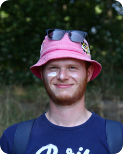
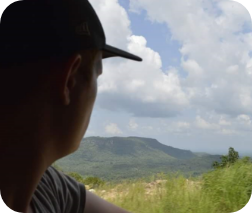

ABOUT ME
HEEY, ik ben Bram Stessen 23 jaar en ben 2e jaars CMD student. Probleemoplossend denken, andere motiveren, creatieve ideeën opdoen en sociaal zijn, zijn karakteristieken die goed bij mij passen. Door mijn al eerder afgeronde opleiding: vliegtuigtechniek B2, MBO 4. Maak ik een uniek combinatie met design en technische kennis.
Mijn motto is seek discomfort. Ik kom graag uit mijn comfort zone voor zelf groei en sta altijd open voor nieuwe dingen. Reizen is een van mijn passies. Ander hobby's zijn festivals en motorrijden.

